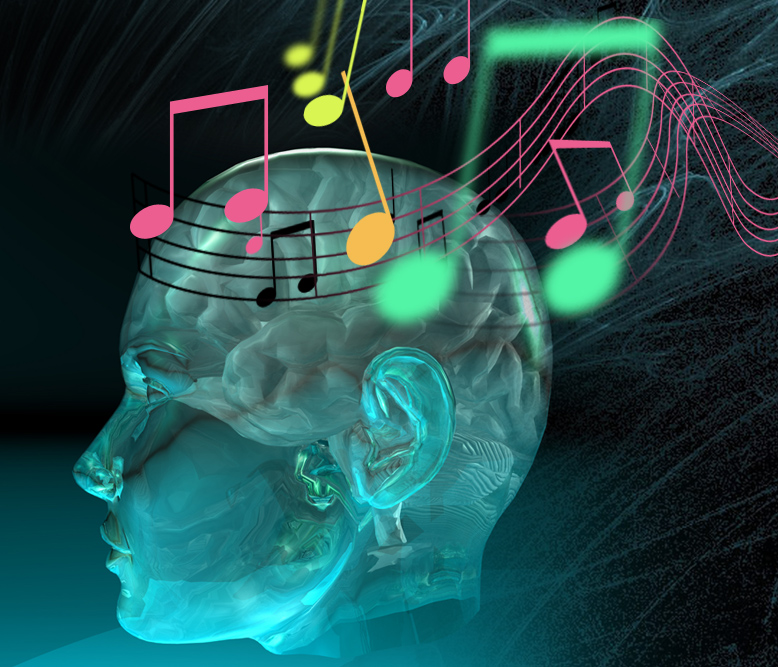

Music has a strong mental impact and a wide spectrum of emotions, which is another reason I adore it. Whether I'm playing an instrument or listening to my favorite music, I've had this experience numerous times. Depending on the kind of music I select, it can instantaneously alter my mood, making me feel more at ease, motivated, or even inspired. This emotional bond with music is supported by scientific studies, and not just something I experience. According to Anxiety NZ, "Listening to music triggers neurochemicals like dopamine, serotonin, and oxytocin, and our brains synchronize with the rhythm of the music we listen to." These neurochemicals are known to boost mood and reduce stress, which is why music can have such a calming or uplifting effect. Additionally, both listening to and making music increases blood flow to the parts of the brain that directly control emotions. The limbic system, which processes emotions and controls memory, becomes active when we listen to music, showing just how deeply our brains are wired to respond to it. Music, therefore, has a unique ability to not only entertain but also to heal and connect with us on an emotional and mental level. A list of examples of these phenomena are listed down below.
